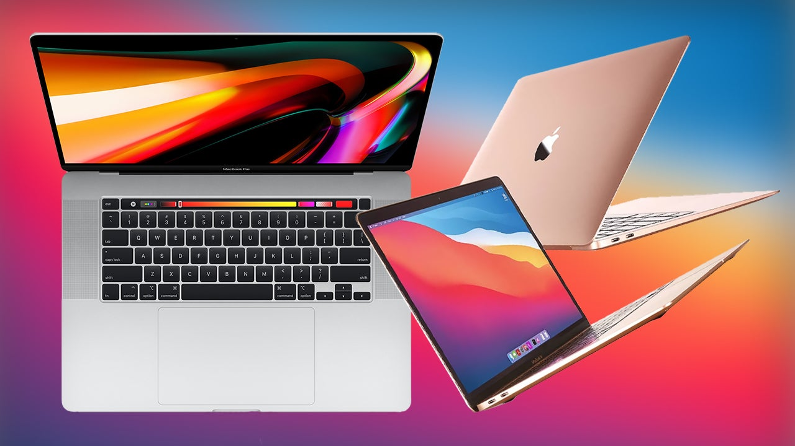

MacBooks
MacBooks are a line of premium laptops designed and manufactured by Apple.
The MacBook Pro caters to professionals with powerful hardware, stunning Retina displays, and features like the Touch Bar.
Meanwhile, the MacBook Air emphasizes portability, boasting a slim design, fanless operation, and impressive battery life.
Whether you’re editing videos, writing code, or simply browsing the web, MacBooks offer a blend of elegance and performance.
Ultrabooks
Ultrabooks are a category of high-end laptop computers, originally coined and trademarked by Intel.
These sleek and lightweight laptops debuted around 2011-2012, standing out for their thin profiles, premium build quality, and smooth performance.
Initially, ultrabooks adhered to strict Intel-imposed criteria, including size limits (e.g., thickness under 21mm for 14-inch models).
However, over time, the distinction between ultrabooks and regular laptops has blurred, and today, ultrabooks encompass premium thin-and-light options regardless of the underlying hardware—be it Intel, AMD, or ARM.
They're ideal for professionals, students, and anyone seeking a balance of elegance and functionality.

Gaming Laptops
A gaming laptop is a portable computer purpose-built for running video games.
These laptops pack powerful hardware, including dedicated graphics cards (GPUs) and robust processors.
They offer ample RAM, storage space, and often feature enhanced cooling systems to handle the intense demands of gaming.
With backlit keyboards and high-refresh-rate displays, gaming laptops provide an immersive gaming experience while maintaining portability for on-the-go play.

Chromebooks
Chromebooks are web-centric laptops that run Google’s Chrome OS.
Unlike traditional operating systems, Chrome OS is built around the Chrome browser, emphasizing web-based apps such as Gmail, Google Docs, and third-party services.
These laptops are designed for simplicity, speed, and affordability. They excel in tasks like web browsing, email, and document editing. Additionally, most Chromebooks can also run Android apps, providing a versatile experience for users